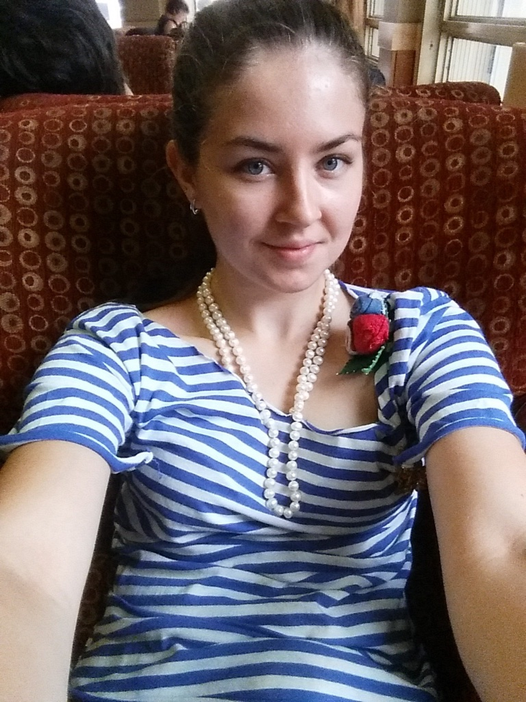

About me

Here are two paragraphs about me.
Bla bla bla Bla
bla bla Bla bla bla Bla bla bla .Bla blah blah Bla blah blah.
Just kidding.
I was studying bioinformatics and bioengineering and I am a scientist in molecular and cellular biology. To make my life even more interesting, I decided to become a web developer. It never hurts to learn something new and useful.
I believe that there are just a few scientists who can create
sophisticated, beautiful, and user-friendly applications for scientific use.
I hope that one day I can develop a research resource that will help to
investigate cellular signaling pathways.
I hope that I will make it happen.
Thank you for taking your time to read this.